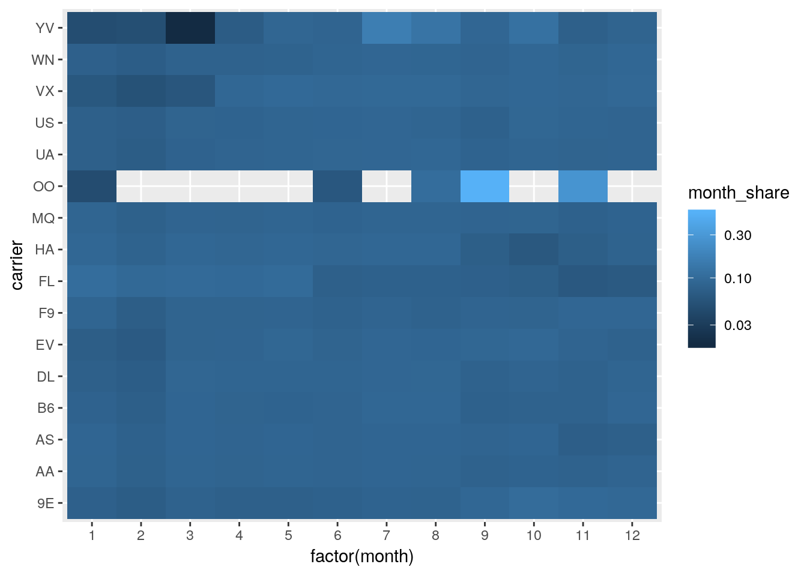

monthly_shares <-
flights %>%
group_by(carrier, month) %>%
summarize(distance = sum(distance)) %>%
mutate(total_distance = sum(distance)) %>%
ungroup() %>%
mutate(month_share = distance / total_distance) %>%
arrange(-total_distance)
monthly_shares## # A tibble: 185 x 5
## carrier month distance total_distance month_share
## <chr> <int> <dbl> <dbl> <dbl>
## 1 UA 1 6777189 89705524 0.0755
## 2 UA 2 6239683 89705524 0.0696
## 3 UA 3 7235740 89705524 0.0807
## 4 UA 4 7580735 89705524 0.0845
## 5 UA 5 7714391 89705524 0.0860
## 6 UA 6 7833622 89705524 0.0873
## 7 UA 7 8008887 89705524 0.0893
## 8 UA 8 8162260 89705524 0.0910
## 9 UA 9 7360730 89705524 0.0821
## 10 UA 10 7734657 89705524 0.0862
## # … with 175 more rowsmonthly_shares %>%
ggplot(aes(factor(month), carrier, fill = month_share)) +
geom_tile() +
scale_fill_continuous(trans = "log10")
Copyright © 2018 Kirill Müller. Licensed under CC BY-NC 4.0.